17 Projekte · Showcase ohne Source
Oliver Barthel
Full-Stack, Mobile, Tools und Spiele – von KI-Video-Pipelines bis nativen Windows-/Android-Apps. Produktivcode bleibt privat; hier siehst du Wirkung und Stack.
Projekte
Übersicht aller Repos unter
oliverba81. Pro Karte: Sprache, Frameworks und
Plattform – Details mit voller Technologie-Info darunter.
AutomaticShorts
Flaggschiff: KI-Autopilot für Faceless-Shorts – Landing und Studio, inklusive der Beispiel-Galerie wie auf der Startseite.
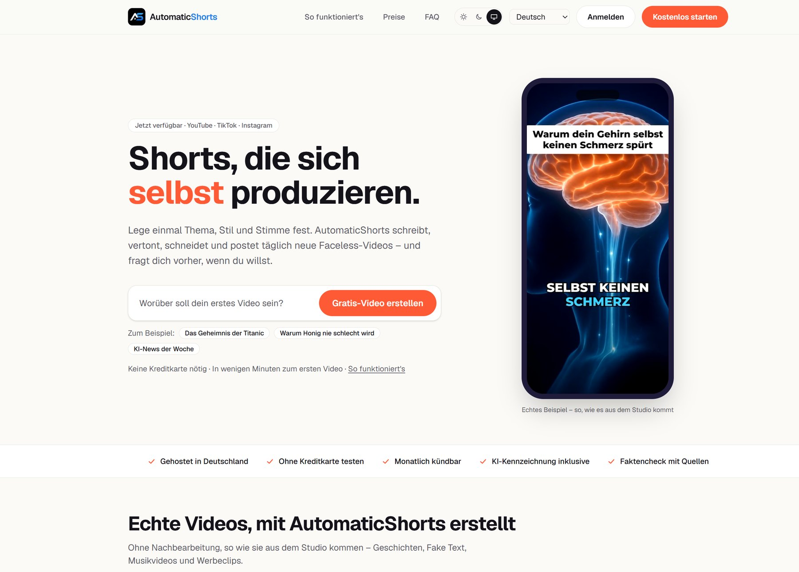
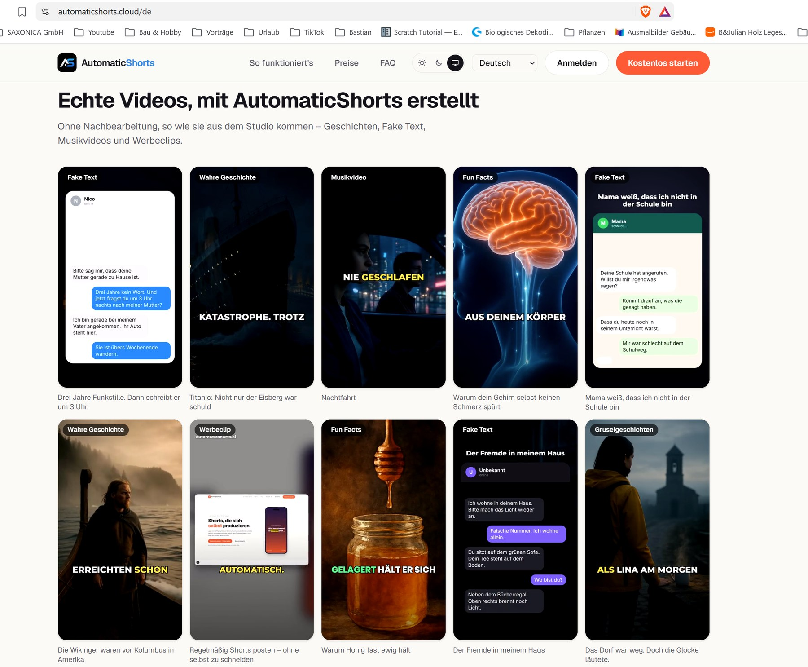
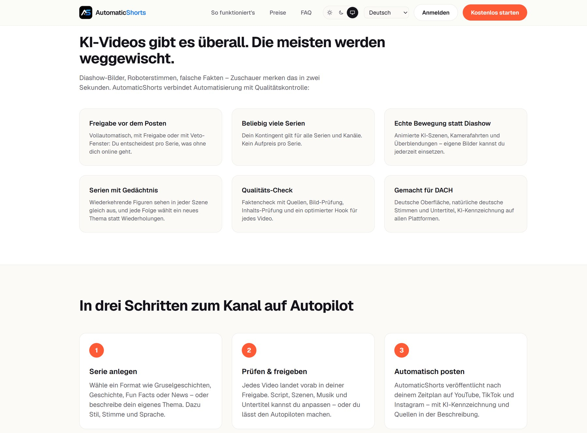
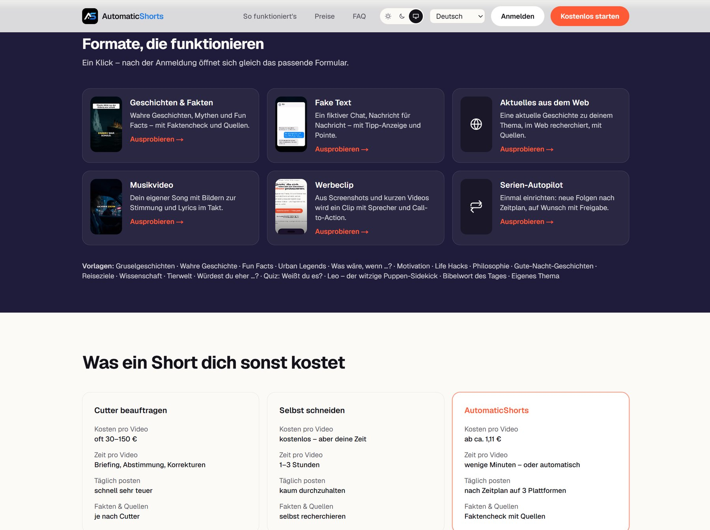
Studio
Produkt-UI: Videos, Serien, Kalender und Formate.
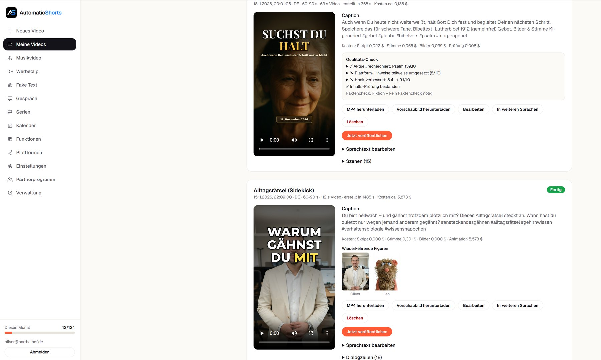
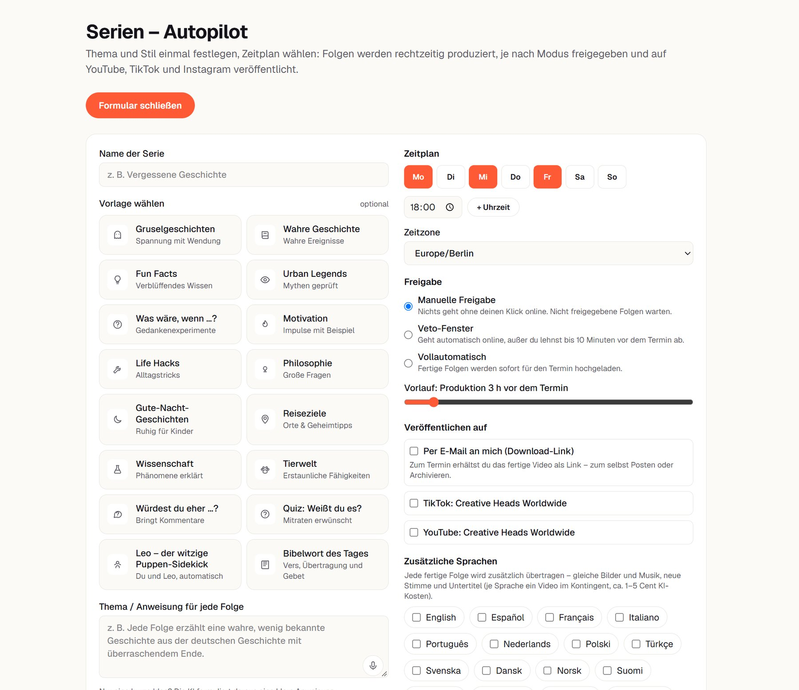
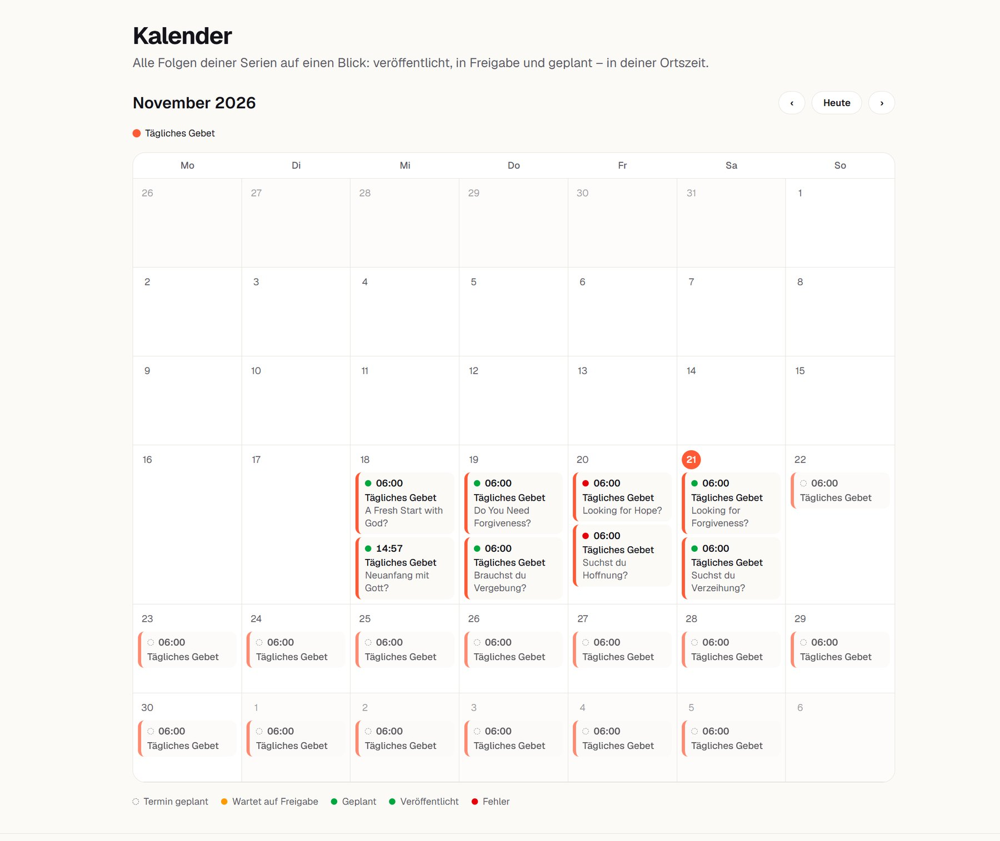
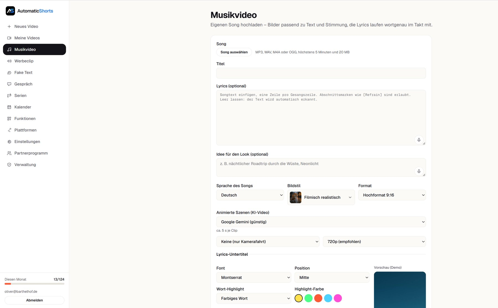
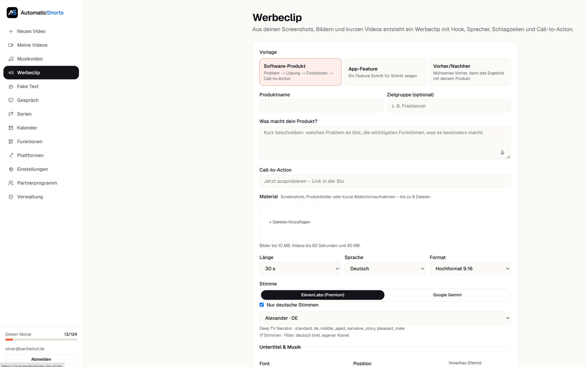
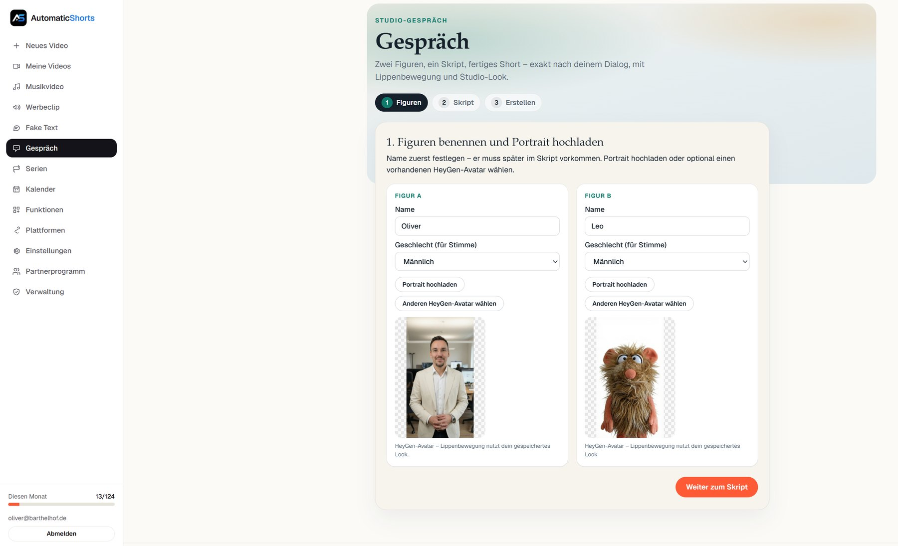
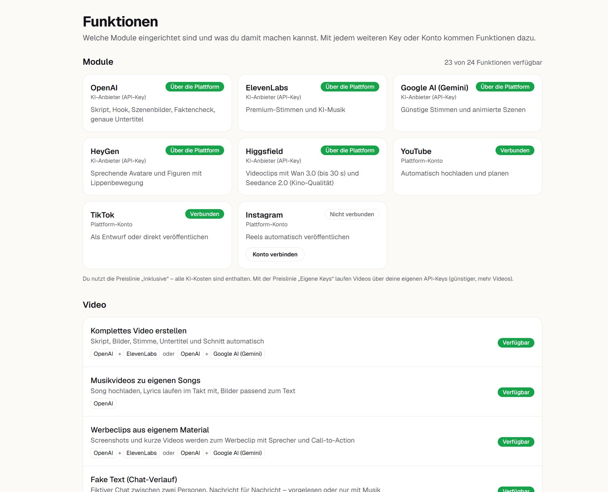
Details je Projekt
Kurzbeschreibung, Stack und grobe Architektur – ohne Source.
So zeige ich Arbeit ohne Code
Private Repos bleiben privat. Vier aktuell öffentliche Tools können für Recruiting ebenfalls auf privat gestellt werden – dieses Portfolio ersetzt die öffentliche Source-Ansicht.
- Ein öffentliches Portfolio-Repo Nur READMEs, Demos und diese Seite – kein Produktcode.
- Profil-README Liste aller Projekte mit Links auf Showcases.
- Code nur im Gespräch Walkthrough oder temporärer Collaborator-Zugang.
Kontakt
Für Deep-Dives zu einzelnen Projekten melde dich gerne.